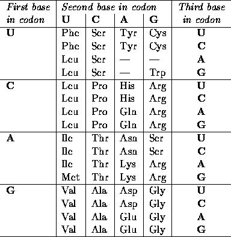

| DNA Translation |
Deoxyribonucleic acid (DNA) is composed of a sequence of nucleotide bases paired together to form a double-stranded helix structure. Through a series of complex biochemical processes the nucleotide sequences in an organism's DNA are translated into the proteins it requires for life. The object of this problem is to write a computer program which accepts a DNA strand and reports the protein generated, if any, from the DNA strand.
The nucleotide bases from which DNA is built are adenine, cytosine, guanine, and thymine (hereafter referred to as A, C, G, and T, respectively). These bases bond together in a chain to form half of a DNA strand. The other half of the DNA strand is a similar chain, but each nucleotide is replaced by its complementary base. The bases A and T are complementary, as are the bases C and G. These two ``half-strands'' of DNA are then bonded by the pairing of the complementary bases to form a strand of DNA.
Typically a DNA strand is listed by simply writing down the bases which form the primary strand (the complementary strand can always be created by writing the complements of the bases in the primary strand). For example, the sequence TACTCGTAATTCACT represents a DNA strand whose complement would be ATGAGCATTAAGTGA. Note that A is always paired with T, and C is always paired with G.
From a primary strand of DNA, a strand of ribonucleic acid (RNA) known as messenger RNA (mRNA for short) is produced in a process known as transcription. The transcribed mRNA is identical to the complementary DNA strand with the exception that thymine is replaced by a nucleotide known as uracil (hereafter referred to as U). For example, the mRNA strand for the DNA in the previous paragraph would be AUGAGCAUUAAGUGA.
It is the sequence of bases in the mRNA which determines the protein that will be synthesized. The bases in the mRNA can be viewed as a collection of codons, each codon having exactly three bases. The codon AUG marks the start of a protein sequence, and any of the codons UAA, UAG, or UGA marks the end of the sequence. The one or more codons between the start and termination codons represent the sequence of amino acids to be synthesized to form a protein. For example, the mRNA codon AGC corresponds to the amino acid serine (Ser), AUU corresponds to isoleucine (Ile), and AAG corresponds to lysine (Lys). So, the protein formed from the example mRNA in the previous paragraph is, in its abbreviated form, Ser-Ile-Lys.
The complete genetic code from which codons are translated into amino acids is shown in the table below (note that only the amino acid abbreviations are shown). It should also be noted that the sequence AUG, which has already been identified as the start sequence, can also correspond to the amino acid methionine (Met). So, the first AUG in a mRNA strand is the start sequence, but subsequent AUG codons are translated normally into the Met amino acid.
The input for this program consists of strands of DNA sequences, one strand per line, from which the protein it generates, if any, should be determined and output. The given DNA strand may be either the primary or the complementary DNA strand, and it may appear in either forward or reverse order, and the start and termination sequences do not necessarily appear at the ends of the strand. For example, a given input DNA strand to form the protein Ser-Ile-Lys could be any of ATACTCGTAATTCACTCC, CCTCACTTAATGCTCATA, TATGAGCATTAAGTGAGG, or GGAGTGAATTACGAGTAT. The input file will be terminated by a line containing a single asterisk character.

You may assume the input to contain only valid, upper-case, DNA nucleotide base letters (A, C, G, and T). No input line will exceed 255 characters in length. There will be no blank lines or spaces in the input.
Some sequences, though valid DNA strands, do not produce valid protein sequences; the string ``*** No translatable DNA found ***'' should be output when an input DNA strand does not translate into a valid protein. Also some sequences can be translated into several different proteines. In that case, print any of them.
ATACTCGTAATTCACTCC CACCTGTACACAGAGGTAACTTAG TTAATACGACATAATTAT GCCTTGATATGGAGAACTCATTAGATA AAGTGTATGTTGAATTATATAAAACGGGCATGA ATGATGATGGCTTGA *
Ser-Ile-Lys Cys-Leu-His Ser-Tyr *** No translatable DNA found *** Leu-Asn-Tyr-Ile-Lys-Arg-Ala Met-Met-Ala